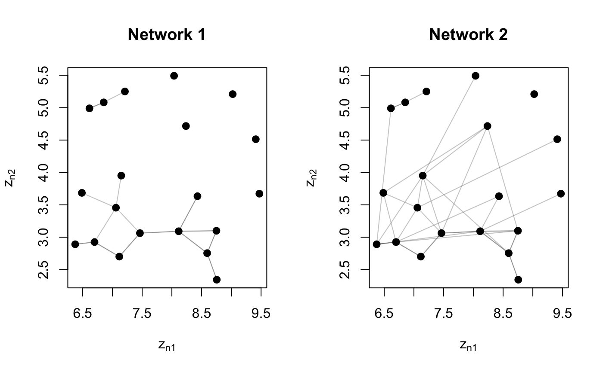
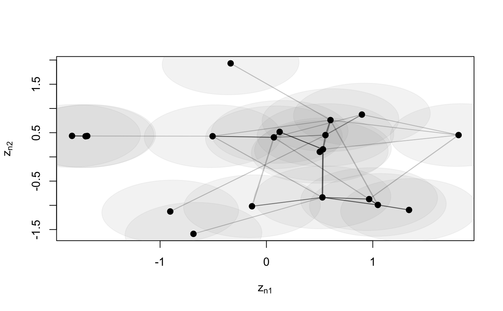
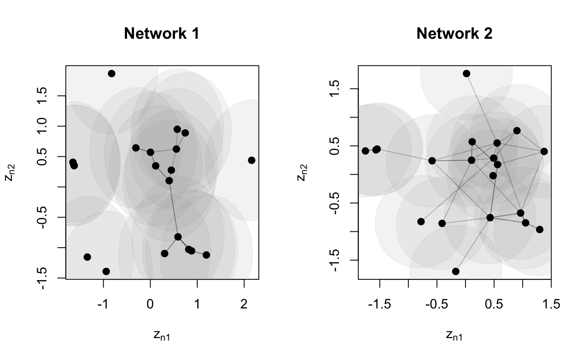

Function to joint modelling of multiple network views using the Latent Space Jont Model (LSJM) Gollini and Murphy (2016). The LSJM merges the information given by the multiple network views by assuming that the probability of a node being connected with other nodes in each view is explained by a unique latent variable.
lsjm(Y, D, sigma = 1, xi = rep(0, length(Y)), psi2 = rep(2, length(Y)), Niter = 500, tol = 0.1^2, preit = 20, randomZ = FALSE)
| Y | list containing a ( |
|---|---|
| D | integer dimension of the latent space |
| sigma | ( |
| xi | vector of means of the prior distributions of \(\alpha\). Default |
| psi2 | vector of variances of the prior distributions of \(\alpha\). Default |
| Niter | maximum number of iterations. Default |
| tol | desired tolerance. Default |
| preit | Preliminary number of iterations default |
| randomZ | logical; If |
List containing:
EZ (N x D) matrix containing the posterior means of the latent positions
VZ (D x D) matrix containing the posterior variance of the latent positions
lsmEZ list contatining a (N x D) matrix for each network view containing the posterior means of the latent positions under each model in the latent space.
lsmVZ list contatining a (D x D) matrix for each network view containing the posterior variance of the latent positions under each model in the latent space.
xiT vector of means of the posterior distributions of \(\alpha\)
psi2T vector of variances of the posterior distributions of \(\alpha\)
Ell expected log-likelihood
Gollini, I., and Murphy, T. B. (2016), 'Joint Modelling of Multiple Network Views', Journal of Computational and Graphical Statistics, 25(1), 246-265 http://arxiv.org/abs/1301.3759.
## Simulate Undirected Network N <- 20 Ndata <- 2 Y <- list() Y[[1]] <- network(N, directed = FALSE)[,] ### create a new view that is similar to the original for(nd in 2:Ndata){ Y[[nd]] <- Y[[nd - 1]] - sample(c(-1, 0, 1), N * N, replace = TRUE, prob = c(.05, .85, .1)) Y[[nd]] <- 1 * (Y[[nd]] > 0 ) diag(Y[[nd]]) <- 0 } par(mfrow = c(1, 2)) z <- plotY(Y[[1]], verbose = TRUE, main = 'Network 1') plotY(Y[[2]], EZ = z, main = 'Network 2')